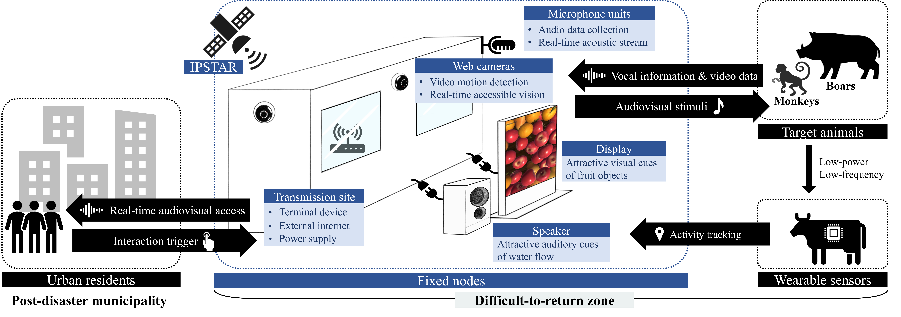
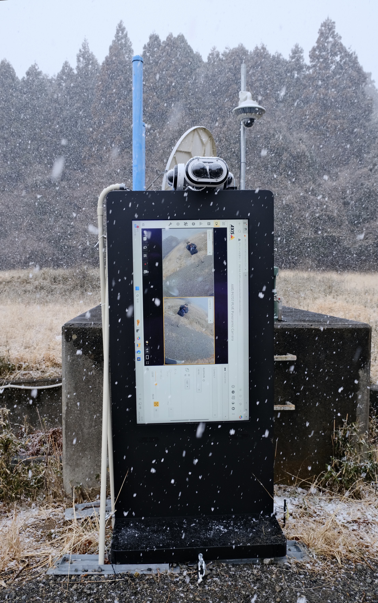
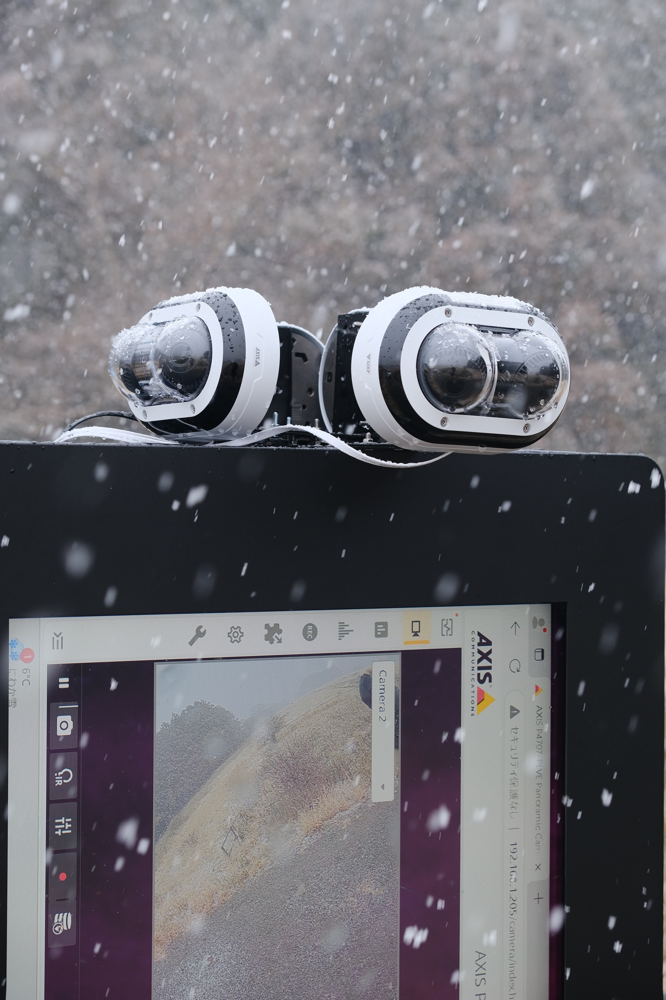
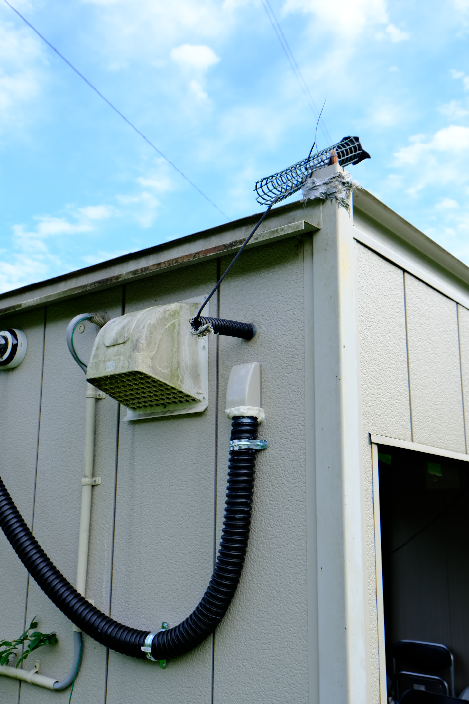
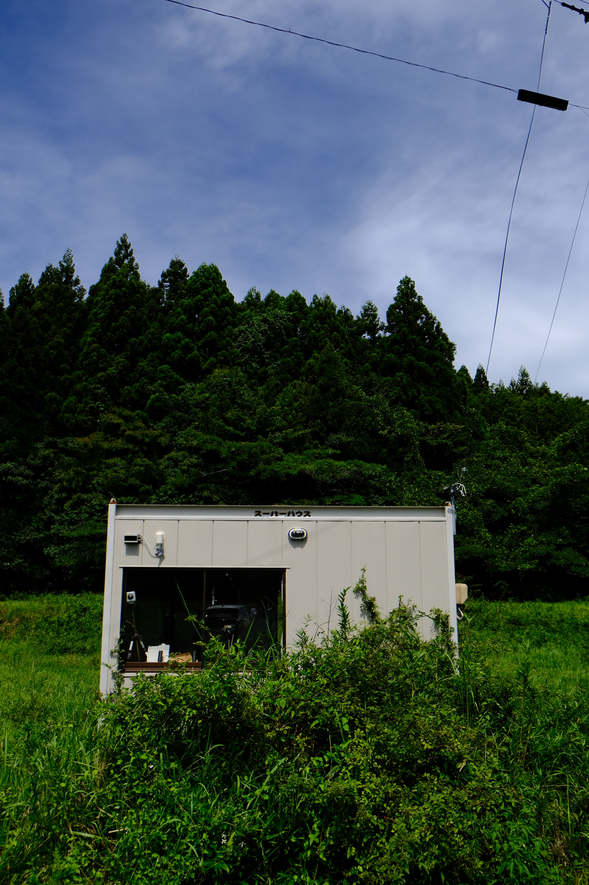
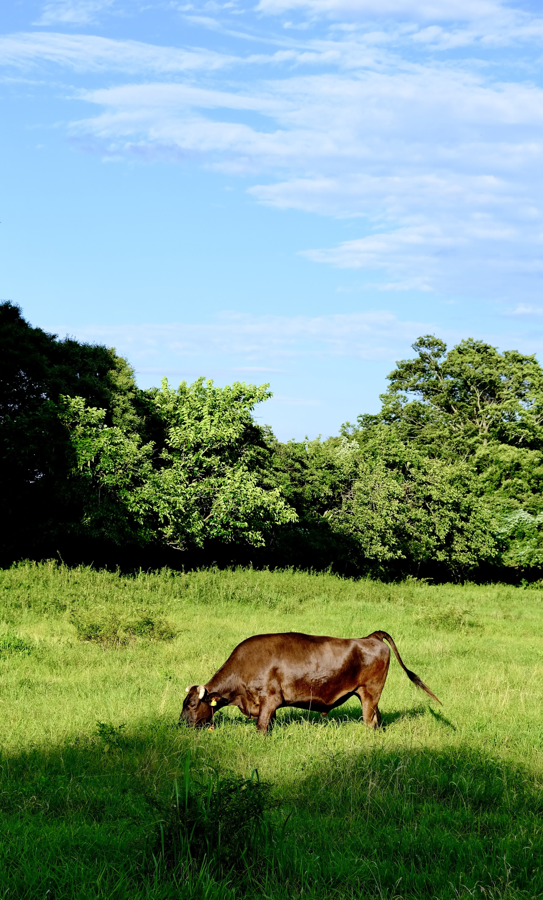

WildEcho: Interactive IoT System in Radioactive Zone of Fukushima
Keywords: Wildlife-Computer Interaction; Environmental Monitoring; Internet of Things
• 2023/11 - present
This research foused on human-wildlife conflict mitigation and ecological monitoring in the post-disaster regions of Fukushima, Japan. An IoT itneractive system was prototyped, deployed, and tested in the "difficult-to-return" zone. Field experiment were conducted in 2025 to assess the system's stability and general effectiveness on wildlife.
Concept
Background
The Fukushima disaster has left significant challenges in socio-ecological recovery. In evacuated residential areas, wildlife-related conflicts have emerged as a critical barrier to the return of population and local revitalization.
Despite ongoing decontamination and rebuilding, high radiation levels and damaged facilities continue to restrict prolonged field research and habitation. For agricultural recovery in particular, there is a need for systems that ensure safety in radiation-exposed areas while enabling efficient operation in a region facing population decline.
Objectives
- Encourage relocation of wild animals through interactive audiovisual stimuli.
- Establish remote access to observe wildlife activity in natural environments.
Technical Approach
- Hybrid network with fixed nodes + wearable sensors
- Cameras (AXIS P3715-PLVE), microphones, amplifiers
- LED screens + speakers deliver visual/auditory cues
- LPWAN for sensors; satellite Internet in exclusion zone
- Unity3D-based application for stimulus control and visualization

Conceptual design of system enabling remote human-wildlife interaction in the exclusion zoneOutputs
Field Evaluation
- 432 hours in exclusion zone (March 2025)
- 6,018 motion events; 980 near display
- Nighttime interactions: 401 detected events; 34 confirmed animal approaches.
- Japanese racoon dog, fox, and raccoon
Findings
- This IoT system achieves stable 24/7 operation in harsh outdoor conditions.
- Interactive stimuli significantly increased animal reaction (p < 0.005).
- No significant difference in overall visitation frequency (p ≥ 0.5).
Publication
- H. Hong, N. Binyamini Ben-Meir, M. Oka, H. H. Kobayashi. (2026)
"Mediated Ecology in Fukushima: Decentralized Storytelling and Collaborative Telepresent Experience Beyond the Post-Disaster Landscape", Frontiers in Human Dynamics, 8, 1800722. [Accepted] - H. Hong, D. Shimotoku, J. Kawase, H. H. Kobayashi. (2025)
"Smart Interactive IoT for Post Nuclear Disaster Landscapes: Towards Sustainable Human-Wildlife Coexistence", In 2025 IEEE 13th Region 10 Humanitarian Technology Conference (R10-HTC), Ichikawa, Japan, 2025, pp. 49-54. doi: 10.1109/R10-HTC63995.2025.11394684
Gallery





